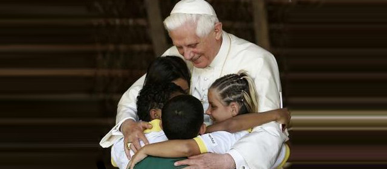

Where All Are Welcome
Call the Parish office : 916-985-2065
Youth Ministry

In their 1997 document on Youth Ministry, Renewing the Vision: A Framework for Catholic Youth Ministry, the U.S. Catholic Bishops outline three interdependent and equally important goals to guide the Church's ministry with adolescents.
- Goal 1: To empower young people to live as disciples of Jesus Christ in our world today.
- Goal 2: To draw young people to responsible participation in the life, mission, and work of the Catholic faith community.
- Goal 3: To foster the total personal and spiritual growth of each young person (RTV 9-18).
Members
Open to all high school and 7th & 8th grade students.
Additional Goals
- Meet new friends and discuss your faith and other issues.
- Weekly meeting with food, fellowship & fun!
- Catholic theology & history
- Scripture readings / discussion
- Retreats, teen conventions
- Prayer, devotions, adoration
- Parish & community service opportunities
- Socials and recreational activities
- Guest speakers
- Movies
- Leadership opportunities
Sr. High Times
Sundays 7-8:30 PM.
Jr. High Times
Tuesdays 7-8:30 PM.
Volunteer
- Help make this happen at St. John the Baptist !!
- Volunteer your time to assist the Youth Coordinator meet these goals.
Contact
Parish Office 985-2065, teens@stjohnsfolsom.org